Our Research
This page shows the research done during the development of the Garden Forge website. We looked at different gardening and e-commerce websites to understand what works well in website design.
1. Nike
Refered Components
- Navigation bar design
- Product page layout
- Use of high-quality images
- Home page product slideshow
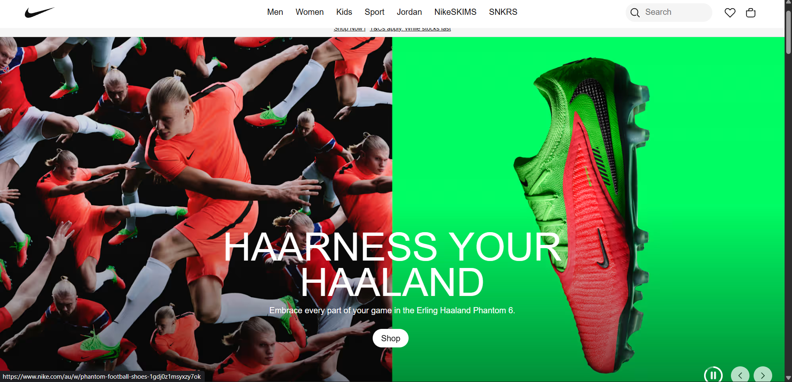
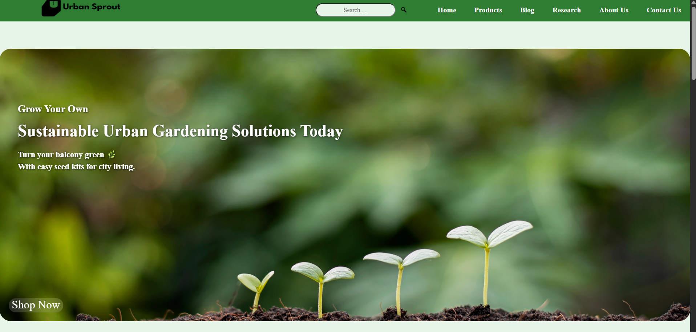
Reference Website
Our Website
Similarities
- Both websites have a clean and organized layout.
- Use of high-quality images to introduce website.
- Navigation bar with clear links to different sections.
- Both websites have a slideshow on the home page to showcase products.
Differences
- Nike has a more minimalist design, while our website has a more vibrant and colorful design.
- Nike focuses on athletic wear and footwear, while our website focuses on gardening tools.
- Nike has different slideshow layouts then our website.
- Nike has a stronger emphasis on performance and innovation, while our website focuses more on accessibility and customer satisfaction.
Improvements
- Our website could benefit from a more prominent call-to-action button.
- Easy navigation and user-friendly interface.
- Improved loading times for better user experience.
2. Daraz
https://www.daraz.com.np/#hp-flash-sale
Refered Components
- Effects on the product section while interacting.
- Product images and thumbnails.
- Detailed product descriptions and specifications.
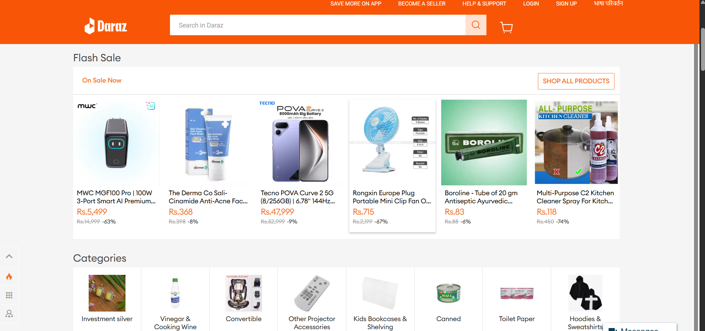
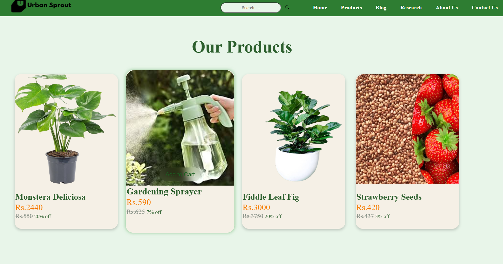
Reference Website
Our Website
Similarities
- Both websites have a clean and organized layout.
- Use of high-quality images to showcase products.
- Listing of products in a grid or list format.
Differences
- Daraz has a no add to cart button whereas our website has a more comprehensive shopping cart feature.
- Daraz has a simpler user interface compared to our website's more feature-rich design.
- Daraz has no noticeable effect on interaction with products whereas our website provides a more noticable effects while interacting with products.
Improvements
- Our website could benefit from a more prominent call-to-action button.
- Consider adding a live chat feature for better customer support.
- Implement a more robust search functionality to help users find products quickly.
3. Apple
Refered Components
- Image based information section with functional buttons.
- Minimalist design approach.
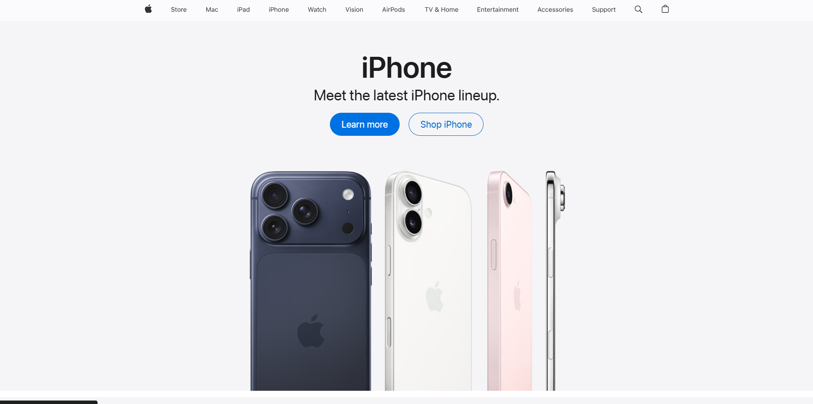
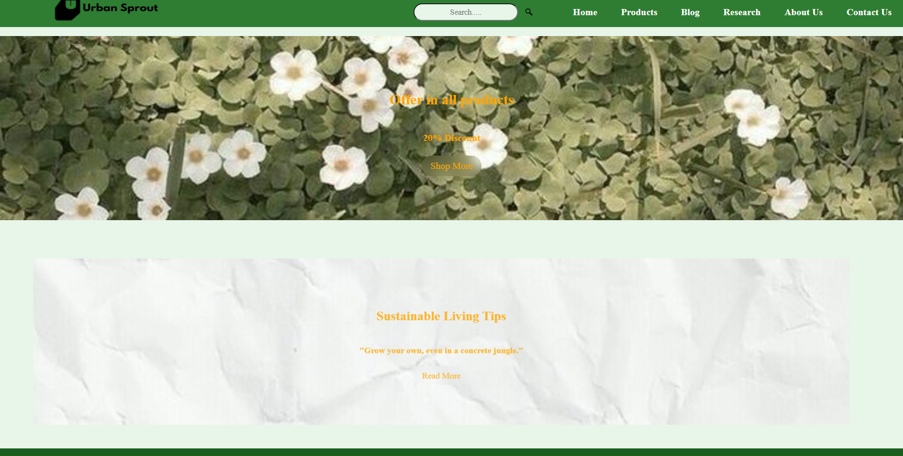
Reference Website
Our Website
Similarities
- Both websites uses big image based section with centered heading.
- Layout focuses on clarity.
- Use of Call To Action(CTA) elements.
Differences
- Apple has extremely minimal and product focused, while our focuses on green gradient and nature theme.
- Apple has precise spacing and typography, while our layout is more expressive.
- Apple is avoiding decorative texture, while our includes background imagery.
Improvements
- Our section is more engaging, less product-based.
- Our section is adapted with stronger visual storytelling
4. Ecokari
Refered Components
- Navigation Components like ; Hyperlink, Social media icon, Column Header.
- Structural components.
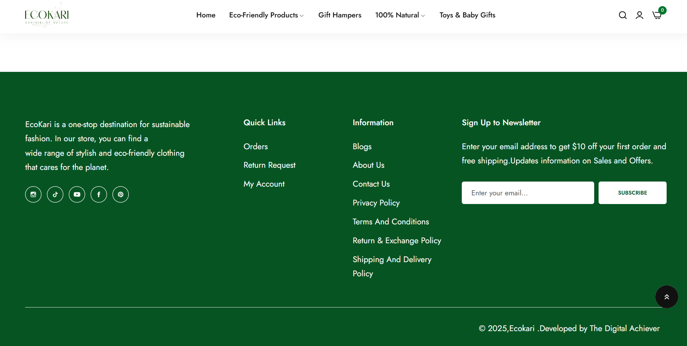
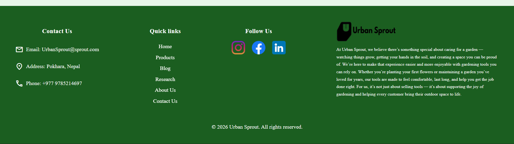
Reference Website
Our Website
Similarities
- Both use a dark green background with white/light text.
- Both include "Quick Links" and "Contact" information to help with user orientation.
- Both feature social media icons to encourage community engagement.
Differences
- Ecokari focuses on minimal multi-color on icon logo, whereas our website has colors on logo.
- By stating "Pokhara, Nepal" and providing the country code (+977), we establish our local identity and service area
Improvements
- Our footer is well utilized with 4-column grid that distributes weight evenly across the screen.
- The EcoKari footer hides contact details behind a "Contact Us" link, whereas we have placed Email, Address, Phone number.
5. Bloomscape
Refered Components
- Add to cart button with functionality.
- Show all button with functionality.
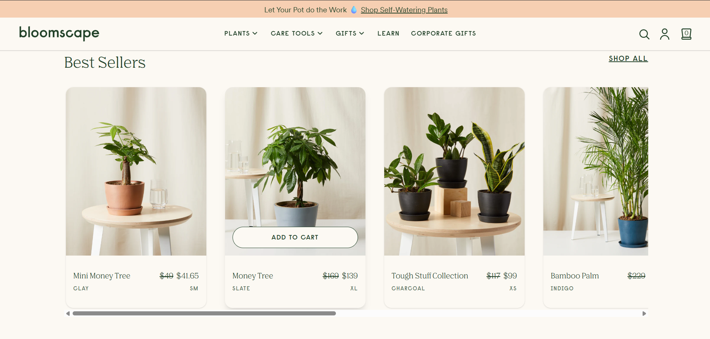
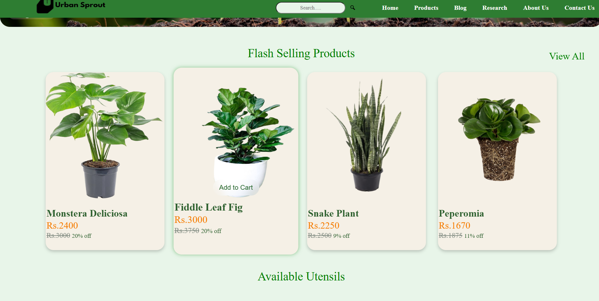
Reference Website
Our Website
Similarities
- Both websites have a add to cart button with functionality.
- Both websites have a show all button with functionality in the right sidebar.
Differences
- Bloomscape has a wider add to cart button where as our website has a fit border.
- Font color and size differ between the two websites.
Improvements
- Our website has a small add to cart button making product more visible.
- Font color are kept according to the theme.
6. Ajima Nursery
https://www.ajimanursery.com/contact/
Refered Components
- Product categorization and filtering options.
- Customer reviews and ratings.
- Detailed product descriptions and specifications.
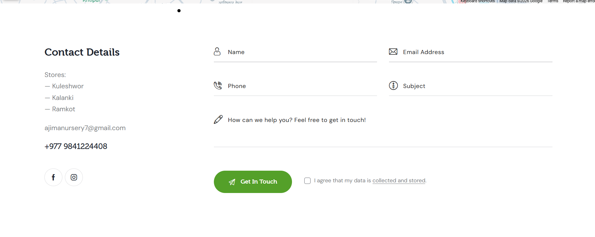
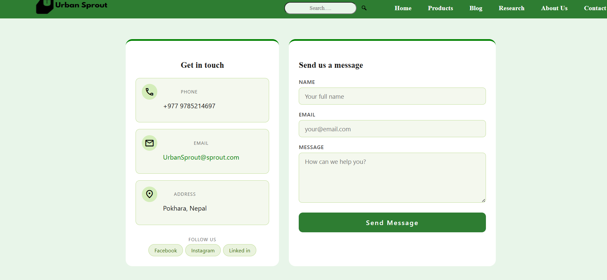
Reference Website
Our Website
Similarities
- Both websites have a clean and organized layout.
- Form is align in the right and information about website is align in the left.
Differences
- Two seperate section has different layouts in our website.
- Reference website lacks clean layout whereas our website has a more organized layout.
- Reference website has a get in touch button whereas our website has a send message button.
Improvements
- Information section and contact form are seperated making user interface lot easier to navigate.
- Form has been improved with better validation and user experience.